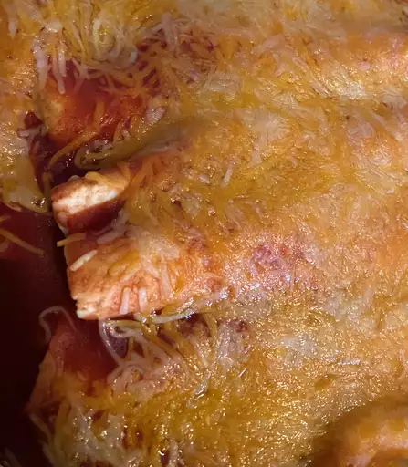

Chicken Enchilada

Ingredients
- 1 tablespoon olive oil
- 4 skinless, boneless chicken breast halves
- 1 onion, chopped
- 1 ¾ cups shredded Cheddar cheese, divided
- ½ pint sour cream
- 1 tablespoon dried parsley
- ½ teaspoon dried oregano
- 1 (15 ounce) can tomato sauce
- ½ teaspoon salt
- ½ cup water
- 8 (10 inch) flour tortilla
How to make Chicken Enchiladas
- Cook the chicken, slice it into cubes, then return it to the skillet
- Add the onion, a cup of cheese, sour cream, and dried herbs
- Melt the cheese. Stir in tomato sauce, green pepper, garlic, chili powder, and salt
- Fill the enchiladas and roll them up. Arrange them in a baking dish
- Top with taco sauce and remaining cheese. Bake until the cheese is melted